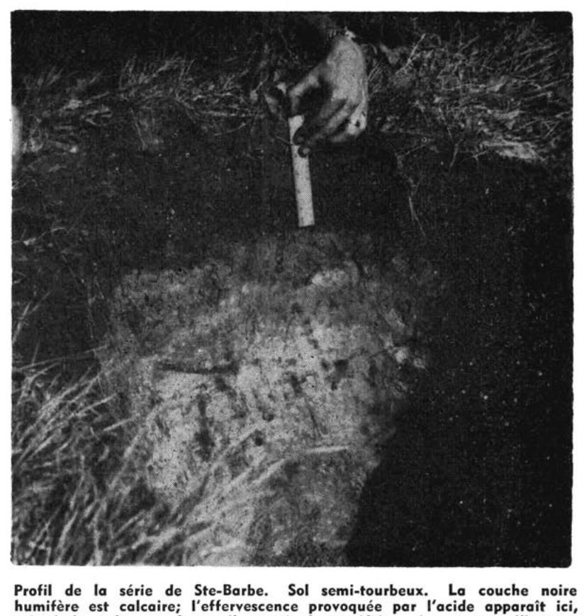

Identification & Caractéristiques Générales
La série Sainte-Barbe se développe sur des sédiments minéraux d'origine lacustre et glacio-lacustre récents, caractérisés par une roche-mère constituée de matériaux variant du limon argileux à l'argile calcaire. Ces dépôts se situent en position topographique plane à légèrement concave dans les basses terres du Saint-Laurent, souvent en bordure immédiate des complexes organiques ou en contrebas des formations morainiques régionales. La morphologie de surface se caractérise par des pentes faibles favorisant l'accumulation des eaux de ruissellement et l'ovnisme des formations sédimentaires fines.
Le profil pédologique montre généralement un sol minéral dont la texture dominante de la matrice est argilo-limoneuse, fréquemment surmonté en condition naturelle par une mince accumulation superficielle de matière organique (terre noire) qui se trouve incorporée à l'horizon de surface par les labours successifs en milieu agricole. En raison de sa position topographique et de la texture fine du matériau parental, le drainage naturel est déficient (mauvais drainage), ce qui entraîne une persistance de la nappe phréatique perchée en période de fonte nivale et de précipitations automnales. La perméabilité est lente dans les horizons profonds et la réaction du sol varie de neutre à légèrement acide, selon le degré de lessivage des carbonates d'origine.
Sur le plan agronomique, les sols de la série Sainte-Barbe présentent un bon potentiel de fertilité intrinsèque, en raison de leur réserve substantielle en éléments nutritifs et de leur capacité d'échange cationique élevée liée à la fraction argileuse. Toutefois, l'utilisation agricole optimale est conditionnée par l'installation d'un réseau de drainage souterrain (tuyauterie) pour remédier à l'excès d'eau printanier. Une fois l'égouttement amélioré, ces sols conviennent adéquatement à la production de grandes cultures et de cultures fourragères. Les principales contraintes de régie incluent la sensibilité au compactage lors des interventions en conditions humides et la nécessité de surveiller la battance et la plasticité de l'horizon de surface lors du travail cultural.
Classification Taxonomique & Environnement Pédologique
| Ordre Pédologique | Gleysolique |
|---|---|
| Grand Groupe (SCSS) | Gleysol humique |
| Sous-Groupe Taxonomique | Gleysol humique régosolique |
| Famille Pédologique | Limoneuse-fine, mixte sableux, alcalin (calcaire) |
| Mode de Dépôt Parental | Lacustre sur marin |
| Classe de Drainage Naturel | Mal drainé |
| Régime Thermique & Humidité | Doux / Perhumide |
Description Morphologique du Profil Type
Séquences génétiques des horizons pédologiques caractérisant le profil type représentatif de la série Sainte-Barbe :
Profil représentatif — Comté de Bagot
✓ Source : Comté de Bagot — Page 74Couleur Munsell : Non précisée
Structure & Consistance : Finement granulaire et poreuse
Description morphologique : Loam humifère, noir. Structure finement granulaire et poreuse. pH. 6.4-7.0.
Couleur Munsell : 5Y 6/2
Structure & Consistance : Polyédrique à granulaire
Description morphologique : Loam sableux, gris olive clair (5Y 6/2) avec mouchetures de rouille. pH. 7.3. Parfois calcaire.
Couleur Munsell : 5Y 6/3
Structure & Consistance : Légèrement feuilletée due probablement à la présence de mica
Description morphologique : Loam argileux calcaire, olive pâle (5Y 6/3). Taches de rouille plus abondantes. Structure légèrement feuilletée due probablement à la présence de mica. pH. 7.6.
Profil représentatif — Comté de Huntingdon
✓ Source : Comté de Huntingdon — Page 126Couleur Munsell : Non précisée
Structure & Consistance : Finement grumeleuse et poreuse
Description morphologique : Limon à limon fin, humifère, noir intense, structure finement grumeleuse et poreuse. pH: 7.2 — 8.0. Souvent calcaire.
Couleur Munsell : 5Y 7/2
Structure & Consistance : Grossièrement nuciforme
Description morphologique : Limon à limon sableux, gris clair à gris olive clair (5Y 7/2 à 6/2), avec quelques taches brun pâle. Structure grossièrement nuciforme. pH: 7.2 — 8.0. Souvent calcaire.
Couleur Munsell : 2.9Y 5/2, 5Y 5/3, 10YR 5/6, 5.5YR 5/6
Structure & Consistance : Feuilletée due aux dépôts de limon fin et de sable interlaminé et micacé
Description morphologique : Limon à limon fin calcaire, brun gris foncé (2.9Y 5/2) à olive (5Y 5/3 à 5/4) avec taches et d'abondantes petites rayures brun jaune (10YR 5/6 à 5/8). Les taches ou amas de rouille, brun vif (5.5YR 5/6 à 5/8) sont à contours irréguliers et se concentrent autour des radicelles. Ces taches montrent des concrétions aux centres et entrent vivement en effervescence au contact de HCl. Structure feuilletée due aux dépôts de limon fin et de sable interlaminé et micacé. Consistance friable. pH: 7.5 — 8.0.
Couleur Munsell : 5Y 6/2, 5Y 6/3
Structure & Consistance : Feuilletée
Description morphologique : Limon à limon sableux calcaire, gris olive clair (5Y 6/2) à olive pâle (5Y 6/3 à 6/4) avec grandes taches ou plaques de rouille très brunes se détachant nettement sur un fond gris olive clair (5Y 6/2) ou olive pâle (5Y 6/3 à 6/4). Ces taches sont souvent constituées de nodules calcaires. Structure feuilletée. Abondance de paillettes de mica jaune brillant. pH: 7.8 — 8.3.
Profils Photographiques & Planches de Terrain
Documents iconographiques, figures pédologiques et coupes de terrain documentées dans les mémoires d'inventaire pour de la série Sainte-Barbe :


Propriétés Physico-Chimiques & Analyses de Laboratoire
| Horizon | Prof. limite | pH (H₂O) | M.O. % | C tot. % | N tot. % | C.E.C. (cmol/kg) | Sable % | Limon % | Argile % | P Meh3 (mg/kg) | K (cmol/kg) | Ca (cmol/kg) | MVA (g/cm³) |
|---|---|---|---|---|---|---|---|---|---|---|---|---|---|
| Ap1 | 10.0 cm | 7.08 | 4.64 | 2.69 | 0.2 | 22.9 | 6.0 | 66.6 | 27.4 | 71.9 | 0.3 | 15.21 | 1.2 |
| Ap2 | 26.0 cm | 7.13 | 4.6 | 2.67 | 0.19 | 23.0 | 8.0 | 64.4 | 27.5 | 67.9 | 0.3 | 15.33 | 1.37 |
| B | — | 7.66 | 1.35 | 0.78 | 0.05 | 16.9 | 11.2 | 63.2 | 25.5 | 13.4 | 0.2 | 11.7 | 1.64 |
Particularités Régionales, Phases & Variantes Pédologiques
Déclinaisons régionales, faciès texturaux, phases d'érosion ou de pierrosité et variantes cartographiées par étude pour de la série Sainte-Barbe :
| Étude Régionale | Symbole | Appellation / Phase / Variante | Différenciation avec la série type (Analyse pédologique) |
|---|---|---|---|
| Comté de Bagot | Ba |
Sainte-Barbe loam | Modalité modale de référence (type de base de la série). |
| Comté de Huntingdon | Ba |
Sainte-Barbe limon fin | Faciès plus limoneux (limon), offrant une forte rétention en eau mais vulnérable à la battance. |
Baal |
Sainte-Barbe argile limoneuse | Faciès argileux plus lourd et compact que le loam de référence. |
Distribution Pédo-Paysagère & Représentativité Cartographique (Couverture PPS 2026)
- Marécages (MEM) — co-occurrente dans 5 polygone(s)
- Norton loam sableux caillouteux (NOT) — co-occurrente dans 3 polygone(s)
- Saint-Bernard loam sableux fin à loam (SBE) — co-occurrente dans 2 polygone(s)
Aptitudes Agronomiques, Hydropédologie & Conservation des Sols
Indicateurs Hydropédologiques & Vulnérabilité à l'Érosion (BDHP 2026)
Interprétation BDHP : Potentiel de ruissellement modérément élevé. Faible taux d'infiltration, présence d'horizons ralentissant le drainage descendant.
Classement selon l'Inventaire des Terres du Canada (ITC / CLI) : Classe 2w.
- Potentiel agricole : Terroir adapté aux cultures régionales selon la texture dominante et la régie de drainage.
- Contraintes majeures : Mal drainé. Risque d'engorgement temporaire ou d'excès d'eau printanier.
- Gestion & Aménagement : Drainage souterrain ou superficiel préconisé sur les terres planes. Chaulage et apport organique régulier selon les bilans agronomiques.
- Cultures adaptées : Grandes cultures (maïs, soya, céréales), prairies fourragères et cultures maraîchères selon le contexte géomorphologique.